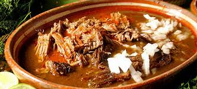

Receta de birria
La birria es un platillo típico de México, originario de Jalisco. Se trata de un guiso de carne de res o de chivo adobada en una salsa de chiles secos. Se suele servir en ocasiones especiales como bodas, bautizos o cumpleaños. Acompaña tu birria con tortillas de maíz, cebolla, cilantro y limón.
Ingredientes

- 500 g de carne de res (puede ser espaldilla o costilla)
- 1 chile guajillo
- 1 chile ancho
- 2 tomates
- 1 diente de ajo
- 1/2 cebolla
- 1 hoja de laurel
- Sal al gusto
- 1 cucharadita de comino (opcional)
- 1/2 cucharadita de orégano
- 1 litro de agua
preparacion
- Para preparar la birria, primero debes cocer la carne en una olla con agua, sal, cebolla y laurel. Deja que hierva a fuego medio durante 1 hora o hasta que la carne esté suave.
- Mientras tanto, asa los chiles y los tomates en un comal o sartén caliente. Deja que se tuesten un poco para que suelten su sabor.
- Una vez que los chiles y los tomates estén asados, colócalos en una licuadora junto con el ajo, la cebolla, el comino, el orégano y un poco de agua. Licúa hasta obtener una salsa homogénea.
- Una vez que la carne esté cocida, retírala de
la olla y córtala en trozos medianos. Reserva el caldo de la cocción.
- En una olla grande, calienta un poco de aceite y fríe la salsa de chiles durante unos minutos. Añade la carne cocida y un poco del caldo de cocción. Deja que hierva a fuego lento durante 30 minutos para que los sabores se mezclen.
¡Listo! Ya tienes tu birria lista para disfrutar. Sirve caliente con tortillas de maíz, cebolla, cilantro y limón. ¡Buen provecho!
Volver al índice